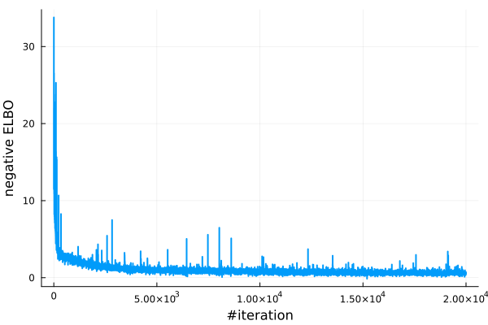
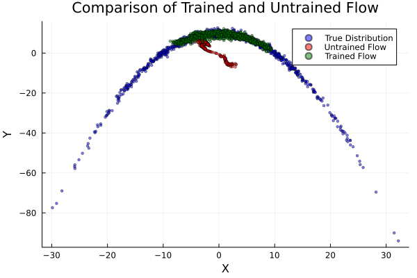

Example: Using Planar Flow
Here we provide a minimal demonstration of learning a synthetic 2d banana distribution using planar flows (Renzende et al. 2015) by maximizing the Evidence Lower Bound (ELBO). To complete this task, the two key inputs are:
- the log-density function of the target distribution,
- the planar flow.
The Target Distribution
The Banana object is defined in example/targets/banana.jl, see the source code for details.
p = Banana(2, 1.0f-1, 100.0f0)
logp = Base.Fix1(logpdf, p)Visualize the contour of the log-density and the sample scatters of the target distribution: 
The Planar Flow
The planar flow is defined by repeated applying a sequence of invertible transformations to a base distribution $q_0$. The building blocks for a planar flow of length $N$ are the following invertible transformations, called planar layers:
\[\text{planar layers}: T_{n, \theta_n}(x)=x+u_n \cdot \tanh \left(w_n^T x+b_n\right), \quad n=1, \ldots, N, \]
where $\theta_n = (u_n, w_n, b_n), n=1, \dots, N$ are the parameters to be learned. Thankfully, Bijectors.jl provides a nice framework to define a normalizing flow. Here we used the PlanarLayer() from Bijectors.jl to construct a 20-layer planar flow, of which the base distribution is a 2d standard Gaussian distribution.
using Bijectors, FunctionChains
function create_planar_flow(n_layers::Int, q₀)
d = length(q₀)
Ls = [f32(PlanarLayer(d)) for _ in 1:n_layers]
ts = fchain(Ls)
return transformed(q₀, ts)
end
# create a 20-layer planar flow
flow = create_planar_flow(20, MvNormal(zeros(Float32, 2), I))
flow_untrained = deepcopy(flow) # keep a copy of the untrained flow for comparisonNotice that here the flow layers are chained together using fchain function from FunctionChains.jl. Alternatively, one can do
ts = reduce(∘, [f32(PlanarLayer(d)) for i in 1:20]) However, we recommend using fchain to reduce the compilation time when the number of layers is large. See this comment for how the compilation time might be a concern.
Flow Training
Then we can train the flow by maximizing the ELBO using the train_flow function as follows:
using NormalizingFlows
using ADTypes
using Optimisers
sample_per_iter = 10
# callback function to track the number of samples used per iteration
cb(iter, opt_stats, re, θ) = (sample_per_iter=sample_per_iter,)
# defined stopping criteria when the gradient norm is less than 1e-3
checkconv(iter, stat, re, θ, st) = stat.gradient_norm < 1e-3
flow_trained, stats, _ = train_flow(
elbo,
flow,
logp,
sample_per_iter;
max_iters=200_00,
optimiser=Optimisers.ADAM(),
callback=cb,
hasconverged=checkconv,
ADbackend=AutoZygote(), # using Zygote as the AD backend
)Examine the loss values during training:
using Plots
losses = map(x -> x.loss, stats)
plot(losses; xlabel = "#iteration", ylabel= "negative ELBO", label="", linewidth=2) 
Evaluating Trained Flow
Finally, we can evaluate the trained flow by sampling from it and compare it with the target distribution. Since the flow is defined as a Bijectors.TransformedDistribution, one can easily sample from it using rand function, or examine the density using logpdf function. See documentation of Bijectors.jl for details.
using Random, Distributions
nsample = 1000
samples_trained = rand(flow_trained, n_samples) # 1000 iid samples from the trained flow
samples_untrained = rand(flow_untrained, n_samples) # 1000 iid samples from the untrained flow
samples_true = rand(p, n_samples) # 1000 iid samples from the target
# plot
scatter(samples_true[1, :], samples_true[2, :]; label="True Distribution", color=:blue, markersize=2, alpha=0.5)
scatter!(samples_untrained[1, :], samples_untrained[2, :]; label="Untrained Flow", color=:red, markersize=2, alpha=0.5)
scatter!(samples_trained[1, :], samples_trained[2, :]; label="Trained Flow", color=:green, markersize=2, alpha=0.5)
plot!(title = "Comparison of Trained and Untrained Flow", xlabel = "X", ylabel= "Y", legend=:topleft) 
Reference
- Rezende, D. and Mohamed, S., 2015. Variational inference with normalizing flows. International Conference on Machine Learning